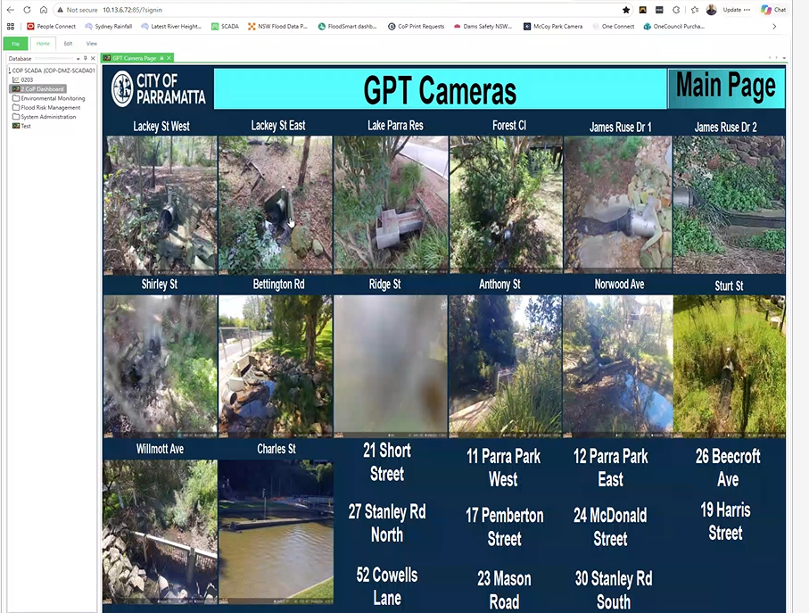
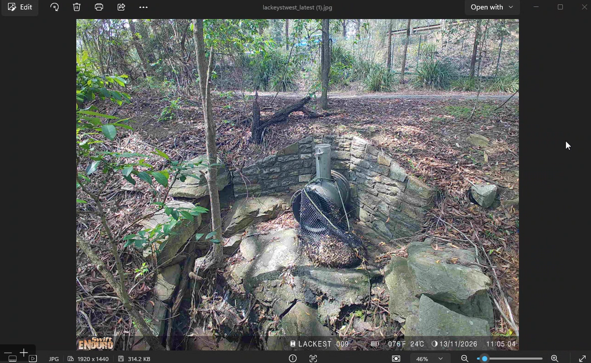

The SCADA "GPT Cameras" page shows 14 live trail-camera feeds (Lackey St West and East, Lake Parra Res, Forest Cl, James Ruse Dr 1 and 2, Shirley St, Bettington Rd, Ridge St, Anthony St, Norwood Ave, Sturt St, Willmott Ave, Charles St) and nine named sites awaiting cameras (21 Short St, 11 and 12 Parra Park West/East, 26 Beecroft Ave, 27 Stanley Rd North, 17 Pemberton St, 24 McDonald St, 19 Harris St, 52 Cowells Lane, 23 Mason Rd, 30 Stanley Rd South).

Lackey St West, 13 Nov 2026 11:05, 24 °C. The litter net has torn and collapsed onto the rocks. A human sees it at a glance; nobody is looking at 23 feeds four times a day. This frame is why "damaged" is a sixth state.
